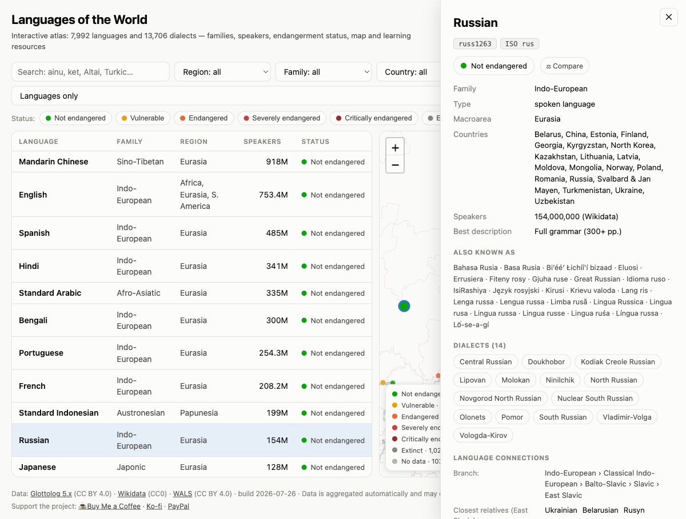
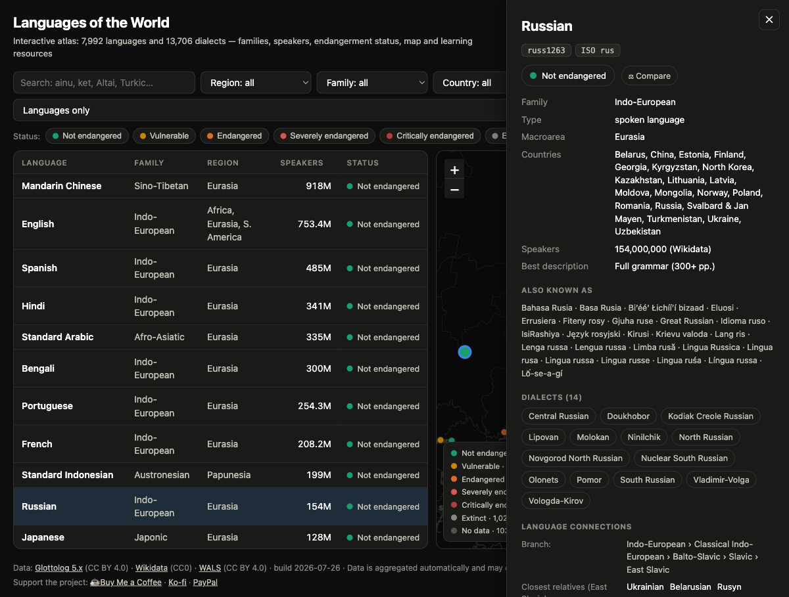
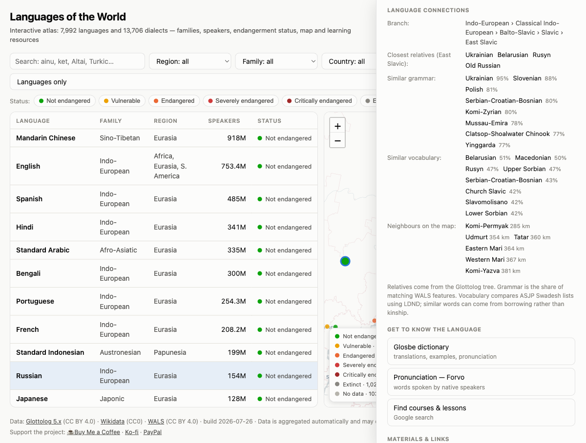
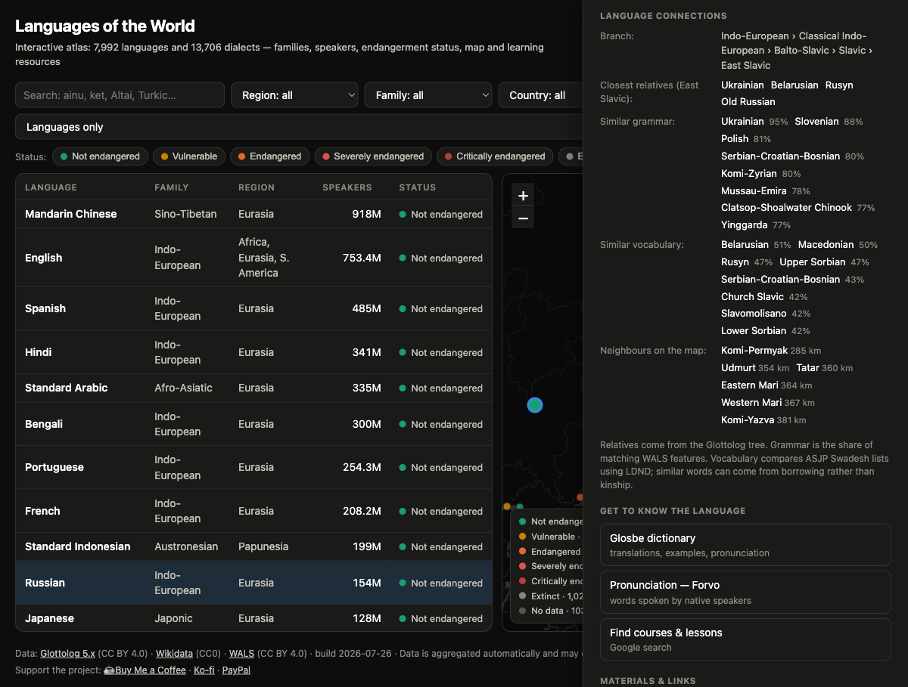
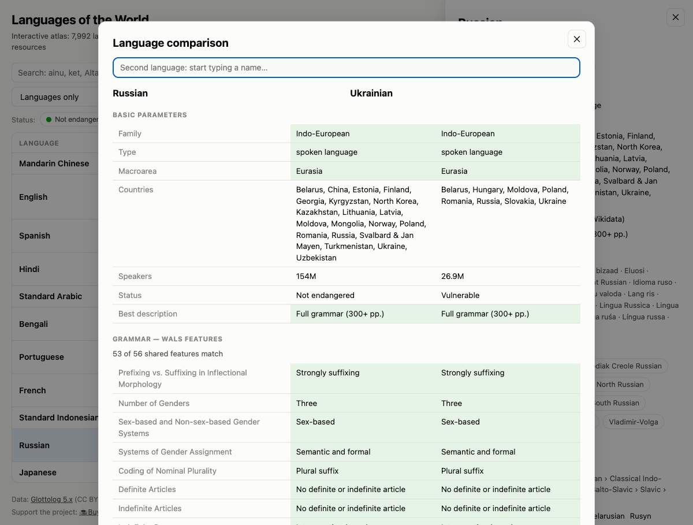
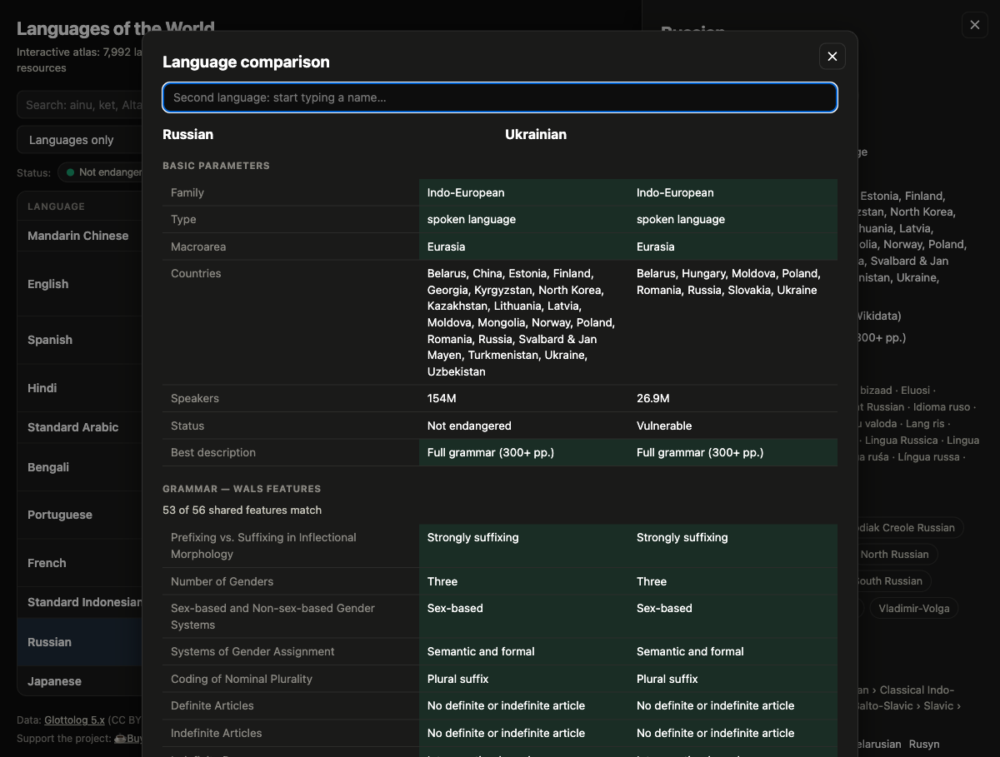

What it looks like






What it does
-
Every language is a dot
The map colours each one by endangerment status on the AES scale, and flies to your results when the filters narrow things down.
-
Search by whatever you remember
Name, ISO 639-3 code, glottocode or family — across 84,000 alternative names, so “wenecki”, “Idioma veneciano” and “Altaï méridional” all land on the same language.
-
It guesses from place names
Type something that isn't a language and it checks whether it's a place, then shows what's spoken within 200 km. “Sandonatese” gets you to Venetian, which no catalogue lists under that name.
-
Related in four different ways
The family tree, shared WALS grammar features, lexical closeness from ASJP Swadesh lists (870,000 pairs), and simple geographic neighbours — kept separate, because they disagree.
-
Two languages, side by side
192 WALS features with matches highlighted, so “how close are Russian and Ukrainian really?” gets a number instead of an opinion.
-
Fifteen interface languages
Including Arabic with full RTL. Language names come from Wikidata labels, and numbers and countries are localised too.
Where the data comes from
Four open datasets, all credited in the footer of the atlas itself: Glottolog for languages, dialects, families, coordinates and endangerment status; Wikidata for speaker counts and localised names; WALS for the 192 grammar features; and ASJP for the Swadesh lists behind lexical similarity.
It's a static site — the data ships as JSON and everything runs in your browser. No account, no tracking, and the heavier files (alternative names, WALS) load only when something needs them.
Worth knowing: the numbers are aggregated automatically. Speaker counts exist for roughly 1,800 languages and can be out of date for small ones, and similarity scores are a measurement, not a verdict — similar words can come from borrowing rather than kinship. Check the primary sources before citing anything.
Running it yourself
The whole site is the web/ folder of the repository — any static
host will do. Locally it needs a server only so the page can fetch its JSON:
The data/ folder holds the Python scripts that rebuild everything
from the upstream sources, so the atlas can be refreshed as they publish new
releases.